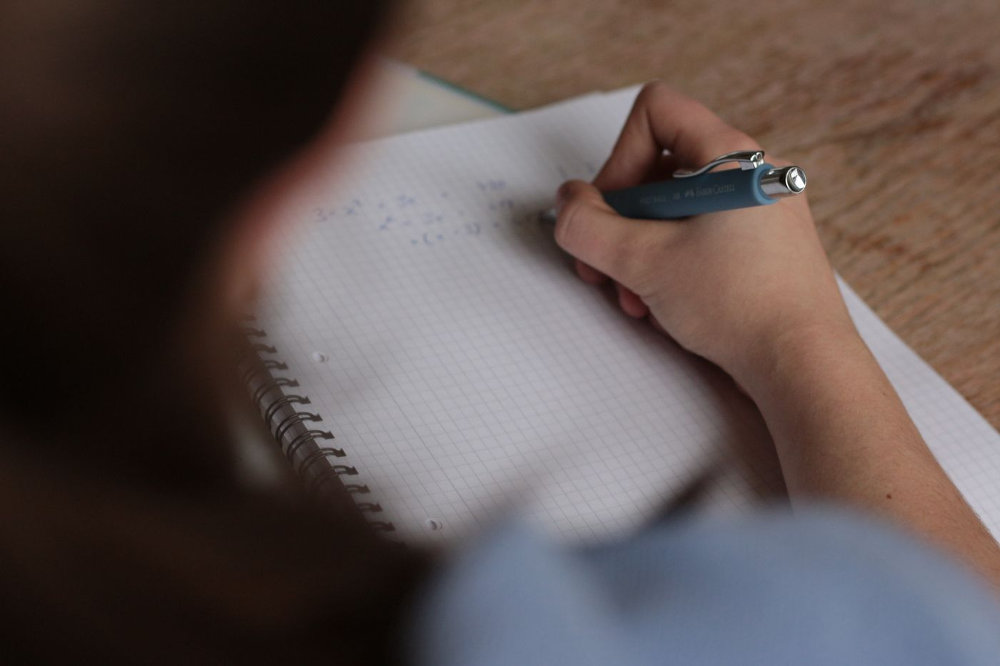

Years 1 to 6 · Manchester & online Assessment lesson: free, 45 minutes.
How it helps
The work, described the way it happened.
Three stories from the practice — the format decisions, the honest conversations, and the systems behind them. They are process stories, not pupil case studies: no child is described in a way anyone could recognise, and no result is claimed that a plan and a report can't show.
FormatPair — adapted
SubjectsMaths (Y6) · English (Y4)
LengthThree terms
Two siblings, one timetable
The brief
A family with children in Year 6 and Year 4 was making two separate trips a week to two different tutors. They asked whether one slot could serve both — knowing the children needed different things: exam-year maths for one, reading confidence for the other.
What was done
The pair format was adapted rather than stretched. The lesson opens with a shared fifteen minutes — a number game or a short text both can work on at their own level — then splits: while one child works a set task at the same table, the other is taught directly, and they swap halfway. Two separate written plans, two separate lesson notes, one weekly slot, one journey.
The outcome
Both children kept their own plan and their own report; the family kept one evening a week instead of two. The arrangement has run for three terms and was renewed for a fourth. The honest limit, told to the family at the start: if either child's needs change sharply, the pair splits — the format serves the children, not the other way round.
Reference photographBooks in a library, by Polina Zimmerman (Pexels). A reference image — not the teaching room, and not a pupil's books.
FormatOne-to-one
Subject11+ Preparation
LengthEleven weeks
The eleven-week run-in
The brief
A Year 6 pupil, eleven weeks before the 11+ examinations. The first question her parents asked was the one every parent asks: can you promise she'll pass? The answer was no — and the course was built on what could honestly be offered instead.
What was done
The free assessment came first, and it decided the plan: reasoning was strong, but timed arithmetic and comprehension under time pressure were costing marks. Eleven weekly lessons worked those two areas in that order, with timed practice from the third week. After every lesson the parents received the usual two-line note — and, for this course, the timed scores themselves, improving or not.
The outcome
She sat the examinations having covered everything on her plan, at the pace the plan set — no all-night cramming in the final week, because the plan had finished a week early on purpose. For the practice as a whole, the published figure stands: of the 14 pupils who completed an 11+ course in 2025, 11 were offered a place at one of their chosen schools. It is printed here exactly as it is printed for every enquiring family, including the three it didn't happen for.

Reference photographMathematical notes, by Louis Bauer (Pexels). A reference image — the working shown is not a pupil's.
FormatAll formats
SubjectReporting system
LengthOne term to rebuild
Reports parents actually read
The brief
The end-of-term reports were three pages long, thorough — and, on the evidence of the replies, largely unread. Parents were paying for tuition they couldn't see. The brief Clara set herself: a report a busy parent will finish, that still contains everything that matters.
What was done
The report was rebuilt to one page, three sections: what we covered, what improved — each claim tied to something checkable, a piece of work or an assessment — and what comes next. Alongside it, the two-line note after every lesson was made a rule without exceptions, so the term report confirms a story parents have already been following rather than breaking news.
The outcome
The one-page format is now the report for every pupil in the practice. In the first term it ran, every family replied to their report — several with questions, which is rather the point. Reading time, by design: under three minutes. The detail is still there for any parent who wants it; it's in the lesson notes, all term long.
Reference photographNotes and study materials organised on a desk, by cottonbro studio (Pexels). A reference image — no pupil's work is shown anywhere on this site.